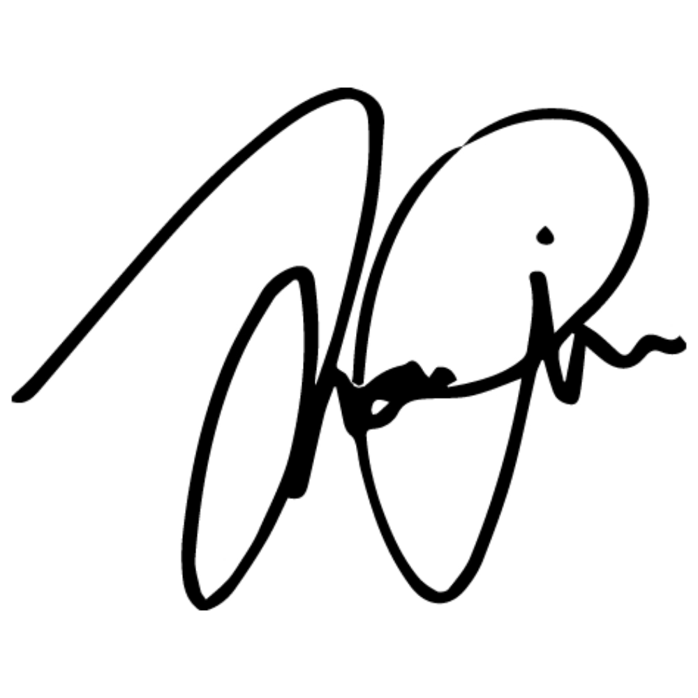
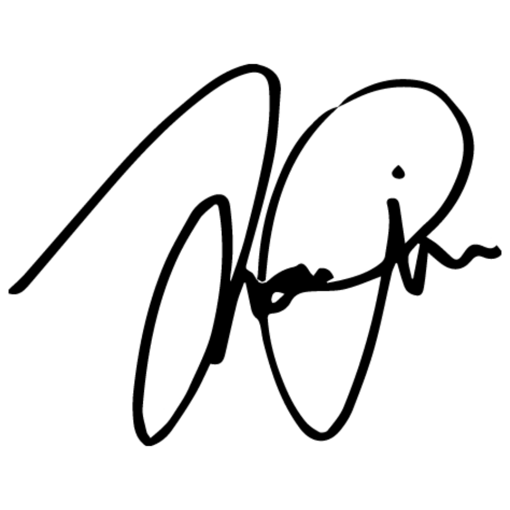

Fresh to web development, we wanted to build an app that was unique and useful, that encouraged us to dig deeper in foundational code, yet still gave us the freedom to be creative. So, we decided to focus on a tiny daily problem and solve it.
DECEMBER 2018
Originally written in HTML, CSS, Javascript
ROLE: PROJECT MANAGER, FRONT-END DEVELOPER, UI/UX DESIGNER
We’ve all found ourselves stuck in this conversation too many times a day (especially those of us who indulge in second dinner). uPick is a multi-player game designed to pick for you!
uPick is specifically designed to take the indecisiveness out of decision making. While we were brainstorming our approach to the issue of the never-ending conversation [fig. 1], we replayed the times we’ve had the conversation IRL and reflected on why we all didn’t know where to eat. I then tried to catch myself when I habitually responded “I don’t know,” observed my in-the-moment thoughts, and found that my mind immediately flooded with an overwhelming amount of options, causing it to freeze like an overheating hard drive.